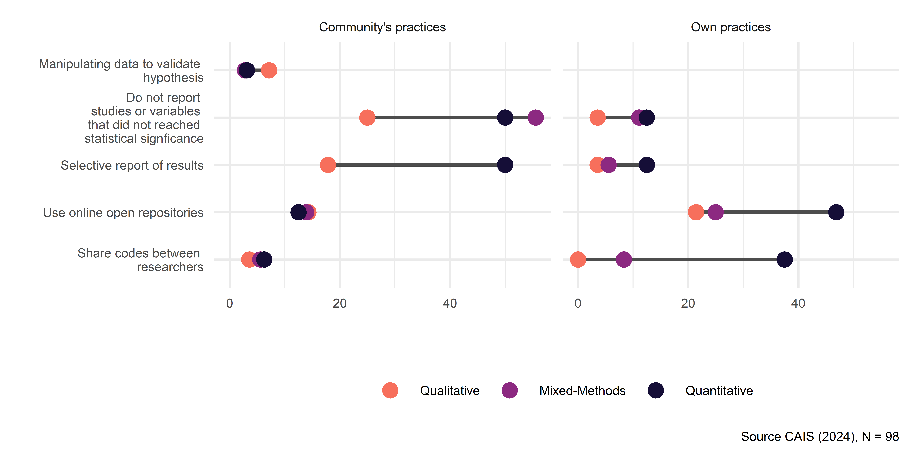

![]()
| Variable | Stats / Values | Freqs (% of Valid) | Valid | Missing |
|---|---|---|---|---|
| Sex [factor] |
1. Women 2. Men |
\37 (37.8%) \61 (62.2%) |
98 (100.0%) |
0 (0.0%) |
| Age [factor] |
1. 28-34 2. 35-49 3. 50+ |
\12 (12.2%) \55 (56.1%) \31 (31.6%) |
98 (100.0%) |
0 (0.0%) |
| Degree [factor] |
1. Master 2. PhD |
\17 (17.3%) \81 (82.7%) |
98 (100.0%) |
0 (0.0%) |
| Career stage [factor] |
1. Early (0 to 5 years) 2. Intermediate (6 to 15 yea 3. Avanced (>15 years) |
\12 (12.2%) \47 (48.0%) \39 (39.8%) |
98 (100.0%) |
0 (0.0%) |
| Research strategy [factor] |
1. Qualitative 2. Mixed-Methods 3. Quantitative |
\28 (29.2%) \36 (37.5%) \32 (33.3%) |
96 (98.0%) |
2 (2.0%) |
Open Social Science in Chile: A mixed method research about Openness, Transparency and Reproducibility
Abstract
In a context of growing concern for replicability, transparency, and access to science, we proposed to describe the levels of knowledge, belief, and practices of open science in the academic community of the social sciences in Chile. We conducted an exploratorty mixed-method design. The qualitative study consisted of semi-structured interviews with 14 academics, which were analyzed by performing a thematic analysis. The quantitative research consisted of a descriptive analysis (N=98). The questionnaire addressed issues about Open Science, transparent design, open data, and reproducible research. Overall, both studies pointed to low levels of knowledge and practices related to open science. In addition, despite generally positive attitudes, we noted particular concerns associated with the possibility of applying these principles in qualitative research, their perceived contradiction with the imperatives of academic productivity, and suspicions regarding researchers’ motivations. Thus, we identified important challenges for the implementation of open science initiatives in the social sciences in Chile, mainly their tension with public funding policies for social research and with the traditional principles of qualitative research.
Keywords
Open Science, Reproducibility, Open Data, Transparency, Mixed-methods
Introduction
Over the past few years, academia has experienced a number of challenges related to the concept of openness, which can be described in two main aspects. The first one refers to the so-called replication crisis (Baker 2016; B. A. Nosek et al. 2015; Peng 2015), referring to the difficulties in replicating research results due the lack of transparency in the research process, evidencing important variations in results in studies with identical data (Breznau 2021). This has resulted not only in the failure to replicate many published findings, but also in the discovery and reporting of false data and results (Chopik et al. 2020) in order to publishing in high impact journals.
The second main aspect comes from openness in terms of access, whereby several academic communities have reacted against the high payment barriers and the business model imposed by publishing houses to access the products of scientific research: universities pay a subscription to access the work even of their own researchers and the general public must pay again to obtains products funded by their taxes. One of the most commented reactions has been the cancellation of subscriptions to Elsevier’s journals by prestige universities such as UCLA, which was subsequently resolved through an agreement based on the adoption and promotion of open-access practices.
Barriers to transparency and access are symptoms of an academic culture driven by the publication of indicators that are biased towards statistically significant results (p-hacking), leading to a tendency to force results, even going as far as manipulating and falsifying data to confirm proposed hypotheses (Head et al. 2015), establishing ad hoc hyphotesis after knowing the results of a study (HARKing) (Hollenbeck and Wright 2017; Kerr 1998). As a result, the main audience for science is ultimately the editors of high-impact journals, while other audiences – such as civil society, decision-makers and citizens — are left out.
A growing number of initiatives around the world are addressing issues of reproducibility, transparency, and access in science, such as the Center for Open Science (COS), the Berkeley Initiative for Transparency in Social Sciences (BITSS), and the Teaching Integrity in Empirical Research (TIER) project. These initiatives promote openness at various stages of the research process, such as transparency of research designs through preregistration of studies, reproducibilty of analyses and data manipulation, and publication of preprints without paywalls. Many of these practices have been adopted by journals as recommendations or even requirements for publication, as well as promoted by governmental scientific institutions. All of this implies a major change in the way science is conceived, practiced, and taught. Moreover, it seems to be a necessary step to make science more relevant and closer to those outside of academia. In other words, it would be difficult to improve openness and exchange with local communities if the work within academia is mostly closed and non-collaborative.
Like many others developments in science, the open science movement has arrived slowly to Latin America, especially in social sciences. Although there have been some initiatives in recent years (such as the Open Science and Citizen Congress in Argentina 2018 or the OpenCon Latam in Colombia 2019), most of them are driven mainly by the natural sciences. In this line, Chile’s National Agency for Research and Development (ANID) has implemented since 2021 and Open Access Policy for scientific information and research data, which aims to establish a standard of public access to research products that have been funded by ANID — including social sciences projects. Therefore it is of strategic nature to develop initiatives that aim to contribute to the openness of sciences.
Based on this diagnosis, we aimed to identify the knowledge, attitudes and practices of open science among social science academics in Chile. From this analysis, we expect to generate debate and proposal for both academic work and science policies.
Background
- Revisión ciencia abierta en general (Kevin, práctica)
Open science has emerged as one of the most significant developments in the contemporary transformation of scientific practice, proposing a set of practices aimed at increasing the transparency, accessibility, collaboration, and reproducibility of scientific knowledge (Fecher and Friesike 2014). This paradigm promotes open access to publications, data, methods, and codes, as well as open peer review, in an effort to democratize the production and circulation of knowledge. In response to crises of reproducibility and credibility in various disciplines, open science represents not only a technical agenda but also a normative one, challenging traditional models of scientific organization and its connection with society (Bezjak et al. 2018) (UNESCO, 2021). Thus, beyond institutional policies, open science implies a cultural shift in the global scientific community.
In the social sciences, the implementation of open science practices has posed specific challenges and opportunities, given the types of data handled, the ethical commitments to participant confidentiality, and the interpretive methodologies characteristic of some subdisciplines. Although initially lagging behind the natural sciences, in the last decade the social sciences have experienced increasing adoption of data repositories, pre-registration of studies, and publication of analytical codes, especially in areas such as psychology, experimental economics, and quantitative sociology (Brian A. Nosek et al. 2018; Hardwicke et al. 2020). At the same time, debates have emerged about how to adapt open science practices to qualitative and collaborative methods, highlighting tensions between openness and the protection of situated or sensitive knowledge (Mauthner and Parry 2013).
The current state of open science in social science research is heterogeneous, both across disciplines and regions. Several empirical studies have documented a growing awareness of the importance of openness, albeit with varying degrees of effective implementation. For example, Van den Eynden and Bishop (2014) found that while social science researchers recognize the value of data sharing, institutional and cultural barriers limit its practice. More recently, Christensen et al. (2019) analyzed over 3,000 articles in the social sciences and reported low but increasing rates of preregistration and data availability. Initiatives such as the Open Science Framework (OSF), Dataverse, and the European Open Science Cloud have contributed to facilitating the necessary technical infrastructure, but challenges related to academic incentives, technical capabilities, and regulatory frameworks remain.
- Principales componentes de la ciencia abierta (JC - modelo LISA)
Transparent design
Transparency in research design constitutes one of the fundamental pillars of open science, proposing that methodological decisions made in research be accessible, justified, and documented from the initial stages of the scientific process. This practice is embodied in strategies such as pre-registration of hypotheses, open registration of protocols, and the publication of analysis plans prior to data collection. As recent research highlights (Banks et al. 2019; Brian A. Nosek et al. 2019), transparency in design not only strengthens the credibility of the knowledge produced but also acts as a deterrent to questionable research practices. However, the social sciences face particular challenges in this area, especially in qualitative or emerging approaches, where designs are adaptive and context-sensitive.
Open data
Open access to research data—also known as data sharing—has been one of the most visible components of the open science agenda. Its potential lies in enabling independent verification of results, the reuse of databases in new research, and the strengthening of a culture of scientific collaboration. In the social sciences, however, data sharing entails dealing with a tension between openness and protecting the confidentiality of participants, given that the data are often sensitive or identifiable. Despite the ethical challenges, studies such as those by Dallmeier-Tiessen et al. (2011) show a growing appreciation among researchers for the value of data sharing to increase transparency and collaboration. Furthermore, principles such as FAIR (Findable, Accessible, Interoperable, and Reusable) are being incorporated into institutional policies and training programs, although challenges remain related to infrastructure, regulatory frameworks, and training for responsible and effective data management.
Reproducible analysis
Reproducibility refers to the ability to exactly replicate the results of a study using the same data and code used in the original analysis. This principle has been central to the discussion about the “reproducibility crisis” that has affected multiple disciplines, including the social sciences. Research such as that by Baker (2016) and Hail, Lang, and Leuz (2020) has documented widespread concerns about the lack of reproducibility, identifying causes such as lack of access to code scripts, opacity in the presentation of results, and the use of weak statistical procedures. In response, the use of platforms such as GitHub, OSF, or Dataverse has been promoted, where researchers can host their codes and workflows. However, as Knudtson et al. (2019) point out, achieving reproducible social science requires not only technical infrastructure but also a transformation in the cultural norms of the academic community that values reproducibility as a criterion of scientific quality.
Open publications
Open access to scientific publications has been one of the most established dimensions of open science, with multiple policies and mandates from funding agencies requiring the public availability of research results. In the context of the social sciences, although numerous institutional repositories and open access journals exist, barriers related to publication costs (article processing charges) and the editorial prestige associated with fee-paying journals still prevail. Narayan et al. (2018) shows that there is a significant gap between the stated knowledge about open access and its effective implementation, particularly with regard to the different existing models (green, gold, hybrid). Likewise, recent studies in Latin America, show a high level of favorable disposition toward open access, but also a lack of institutional incentives and technical support mechanisms to facilitate its widespread adoption (Pardo Martínez and Poveda 2018).
- Antecedentes políticas de ciencia abierta Chile
Design
We conducted a mixed sequential-exploratory design. This approach consist of two-stage method, usually starting with a qualitative analysis followed by the development of quantitative instrument (Creswell and Plano Clark 2018).
The integration of both techniques is justified by the fact that, although there is international experience in the study of practices and evaluation of Open Science, no previous research was found to address this issue among Chilean social science academics. Thus, we proposed a design that includes a first phase of qualitative exploration that allowed us to have a first impression of the knowledge, practices and attitudes about the concept of Open Science in the Chilean academic community. The result of this first study were integrated in the design of the quantitative instrument that was applied in a second study.
In addition to informing the construction of the instrument, the integration between the qualitative and quantitative studies was achieved by synthesizing the results of both phases. In this way, we sought to draw coherent conclusions by evaluating how the quantitative data were able to expand or validate the initial findings of the qualitative study, generating a comprehensive understanding of the state of Open Science in the Chilean social sciences.
Qualitative Study
Methods
We conducted a total of 13 semi-structured interviews with empirical social science researchers, who were selected through a simple random sampling method based on predetermined criteria. The sampling frame considered all academics who had been granted with a Regular Fondecyt (National Fund for Scientific and Technological Development) Project between 2018 and 2019 in the following study groups: Anthropology and Archaeology, Economic and Administrative Sciences, Legal and Political Sciences, Psychology, and Sociology.
To ensure a diverse sample, we allocated quotas based on sex and study group, randomly selecting one or two informants per sex for each study group. Researchers primarily engaged in theoretical research, those specializing in philosophical research within Legal and Political Science study group, those not dedicated to social anthropology within the Anthropology and Archaeology study group, and those focused on neuroscience within the Psychology study group, were excluded from the sample. Finally, given the multidisciplinary composition of the sociology study group — which includes researchers from related fields, such as social psychology and social work — we employed a randomization process to ensure the inclusion of at least one sociologist. The final composition of the sample is presented in Table 1
| Study Groups | Men | Women |
|---|---|---|
| Anthropology and Archaeology (Social Anthropology) | 0 | 2 |
| Economic and Administrative Sciences (Economics) | 1 | 1 |
| Legal and Political Sciences (Political Science) | 2 | 1 |
| Psychology | 1 | 2 |
| Sociology | 1 | 2 |
Despite it was not considered as a sample inclusion criterion, the participants mirror the methodological diversity observed in the social sciences in Chile (Ramos, Canales, and Palestini 2008). Specifically, six researchers predominantly utilize qualitative methods, five predominantly work with quantitative methods, and two use mixed methods.
The interviews were conducted via video call, with a duration ranging from forty minutes to one hour. We addressed topics such as researchers’ familiarity and knowledge about open science, their engagement in open science practice, their attitudes of openness and transparency practices, and the potential compulsory use of these practices in the future.
We employed a qualitative thematic analysis, as is a method that facilitates the identification and description of patterns of meanings (Braun and Clarke 2006), as well as the set of relationships and hierarchies that are generated between them, organized around the concept of open science and the ideas associated with it, based on both semantic and latent codes (Boyatzis 2010). In this sense, this method is particularly useful for understanding participants’ views, knowledge, experiences, and values regarding open science.
Two research team members conducted primarily the analysis, with support from ATLAS.ti qualitative analysis software version 9.0.5. The coding process was carried out simultaneously by both researchers and discussed in regular team meetings. This approach ensured triangulation throughout the analysis process (Nowell et al. 2017). In addition, versions of the project and its products were systematically archived, and the researchers’ personal reflection and team discussions about the analysis were recorded in a reflective diary, in order to safeguard the auditability of the research process (Lewins and Silver 2007).
Throughout the results report, we will reference specific participants in parentheses, indicating their discipline and their predominant methodological approach. For example, we will use tags such as Sociology, mixed-methods or Economics, quantitative.
Results
Open Science: A fuzzy concept
Initially, the concept of open science seems to be a difficult idea to define, seemingly distant to the participants. Most interviewees indicated that they were unfamiliar with the idea of open science and did not associate it with concrete practices or initiatives. However, this coexist with varying degrees of awareness of the problems faced, common practices of openness and transparency, and even experiences of researchers who have been directly involved in a number of institutional or international open science initiatives.
Rather than referring to concrete open science practices, the concept is mainly associated with a variety of research initiatives and policy orientations. It is strongly associated with community engagement or scientific dissemination, as well as with access of the general population or “communities” to research results.
Some interviewees also associate the concept with knowledge production, referring to the involvement of participants, communities and stakeholders in the research process; the use mixed (Sociology, qualitative); or interdisciplinary (Anthropology, qualitative; Sociology, qualitative) methods. Few refer to practices such as open data or publication in open access journals.
Despite the difficulties in defining it, we observed mostly positive attitudes about open science, at least in the first instance. These range from it direct association with democratic values and knowledge democratization, to more vague and doubtful assessments. However, some negative perceptions have also been observed, with some researchers referring to open science as a “fever” — i.e. a passing trend — or as an “overly ambitions project”.
Open Science attitudes and practices
a. Open Results
In the interviews, the idea of openness is fundamentally linked to the openness of results. There is a consensus to prioritize this practices, either through open access journals, policies such as the Gold Route (Pyshcology, quantitative; Anthropology; qualitative), or by sharing preprints and final versions in academic or personal social media.
Regarding the initiative of sharing and requesting articles or previous versions in academic social media, two main attitudes stand out among researchers. On the one hand, there is an attitude of suspicion towards this type of practices, considering it a mixture of altruism and personal interest (Psychology, quantitative). Although scientific collaboration is valued and desirable, it is recognized that it benefits the researcher by increasing the number of citations. This suspicion of an instrumental motivation, linked to funding policies, leads some researchers to refrain from these practices.
On the other hand, we found that the existence of non-dissemination clauses in many journals discourage the sharing of results, although no researcher reported being sanctioned or audited for sharing their publications. Beyond any concern, the high value placed on the openness of results encourage researchers to share their publications in academics social media or other platforms.
To facilitate access to the results of their projects, some researchers have resorted to legal means such as the Gold Route. This alternative allows free access to publications against payment by the authors. However, this option is viewed negatively by some respondents, who have expressed their refusal to pay for this service again in the future due recent increases in fees (Psychology, quantitative; Anthropology, qualitative).
In light of this, it is questioned whether these initiative truly reflect the principles of open science, criticizing the role and market power of large publishers. It is argued that these practices are based on shifting the cost of access from users to researchers (Psychology, quantitative). However, these views coexist with a more pragmatic perspective that recognize that, given the model is based on free peer preview and sale of access, someone must assume the cost of openness (Political Science, mixed-methods).
On the other hand, it is possible to identify a generally negative attitude towards ANID’s dissemination policy, as it is perceived as inadequate for the dissemination of knowledge produced with public funds. Interviewees report the rigidity of the policy to the extent that it makes it difficult to carry out certain dissemination initiatives aimed at non-academic audiences, such as the publications of podcasts.
In addition, it is highlighted that ANID’s funding structure places a greater emphasis in WoS and Scopus indexed journals, to detriment of Spanish-language OA journals. Although the latter have less academic impact, it is recognized that they are more accessible to the general public and decision-makers.
On the contrary, the prioritization of English-language paywalled journals is perceived as a “transfer of capital from the global South to the global North” (anthropology, qualitative). In this way, research funded with public resources is published in paywalled journals to which national researchers or their universities must pay — usually with public funds — in order to gain access.
Thus, interviewees identify tensions between the need to open and disseminate the results of publicly funded research, the rigidity of ANID’s dissemination policy, and its funding and incentive scheme. In order to balance the pressure to publish in high-impact journals with the principles of openness, researchers have adopted strategies such as diversifying their research outputs. On of them is the “sacrifice of publications”, which implies deferring results: some are sent to high impact journals in order to maximize scores in future funding applications; others are sent to local open journals in Spanish, which are more accessible to the general public. The following quote illustrates this practices and its effects:
In line with the previous quote, is is noted that the idea of openness is not limited to access to academic publications, but that the results must have “social impact”. With this in mind, practices such as the publications of columns and editorial in written press (Psychology, quantitative), the creation of documentaries (Sociology, qualitative), and instances of feedback with the communities that participated in the study (Anthropology, qualitative; Psychology, quantitative) are adopted.
Finally, with regard to access to scientific publications, the interviewees emphasized the role played by the universities where they work, specially through their libraries. For this reason, respondents indicated that they had not experienced difficulties in accessing publications. On the other hand, others recognize that in Latin America the practice of accessing scientific products such as preprints or working papers though informal mechanisms or even piracy is widespread among researchers and provides yet another mean of dealing with access problems without major consequences.
b. Design Transparency
Only a few respondents reported having pre-registered their research on the Open Science Framework website (Psychology, quantitative; Political Science, mixed-methods) or though journal initiatives (Political Science, mixed-methods; Economics, quantitative). In the case of economics, it is noted that pre-registration is a widespread practice given the protocols of the American Economics Association. These have been evaluated positively, but in some cases they are considered as an excessive standard due to its obligatory nature in many journals. All this experiences seem to point to the importance of editorial initiative in promoting transparency practices in the research process.
However, the vast majority of respondents were not really familiar with the concept of pre-registration. Another group of respondents were aware of the idea, but without practicing it, and outlined various arguments against it, such as:
The idea that pre-registration is only possible in certain types of research — quantitative research with hypothesis — so its practice does not make sense in other designs (Psychology, qualitative; Economics; quantitative).
It is argued that pre-registration can be a “straitjacket” (Political Science, qualitative), especially in the case of following a more inductive logic. For some researchers, the design exists only in its execution (Sociology, qualitative), so equivalence between an earlier design and the final product cannot be guaranteed.
There are concerns about intellectual property rights when publishing research designs that have not yet been carried out (Psychology, quantitative).
In sum, despite highlighting the fact that the pre-registration of hypotheses make it possible to ensure that a research does not involve practices such as HARKing, the low knowledge and training in this practice, its association with certain types of research, the methodological limitations raised, and the concerns related to intellectual property are the bases of the suspicion and consequent low extent of this practice.
c. Open Data
Positive attitudes towards open data are mainly based on the belief that it is useful for the development of science. This is because it is understood to enhance the scientific impact of publications associated with the data, to save human and financial resources allocated to data production, and to reduce the impact on marginalized communities or social groups that are more often studied.
Particularly in the case of publicly funded research, most researchers showed a very positive attitude towards data openness, and several pointed out that it should be a stronger or mandatory requirement. Some researchers even argued that data in this type of research are public goods, and non-availability of data was perceived as illegitimate hoarding.
On the other hand, some researchers question the obligation of data openness, highlighting the personal investment and additional cost involved. They argue that data are research property, at least temporarily, since their production requires innovation, creativity, and the building of relationship with subjects or institutions. For these researchers, data production is therefore an intellectual production, not a simple investment of public resources executed by the researcher.
In addition, there is a tension between open data and the pressure to publish, not only because of the time the researcher must devote to opening data, but also because of the pressure for scientific products with original and novel questions and designs. Thus some researchers question the value of open data, arguing that it is difficult to use public data in new ways because it has already been used.
Along with this suspicion about the usefulness of open data, we observed doubts about whether this practice is suited to the specificity of social science research. Thus, respondents pointed to the methodological costs and ethical risk that researchers perceive in practice, drawing a distinction between quantitative and qualitative research.
On the one hand, all researchers agreed that most quantitative data should not require special ethical protocols or conditions of use, except for data generated in special populations or in economics studies where the data belong to private companies.
On the other hand, the opening of qualitative data faces significant challenges from the perspective of respondents, such as protecting the identity of participants. It is mentioned that even if it were possible to mobilize human resources for data anonymization, the risk of harm to many communities exceed their anonymity. In addition, the decontextualization of the data due the loss of the relationship between the researcher and the communities limits the analysis and discourages its use.
It is noteworthy that despite the perceived differences in the ease and relevance of openness between qualitative and quantitative data, only two of the researchers interviewed — one qualitative and one quantitative — had ever practiced open data publication beyond editorial requirements and sharing data directly with other researchers.
d. Analysis Transparency
Analysis transparency is valued for its contribution to scientific progress and to the methodological learning of new researchers. In addition, a growing demand from high-impact journals for more detailed methodological sections in qualitative research and for the disclosure of analysis codes in quantitative studies is perceived and appreciated. This increased transparency is associated with greater analytical rigor and validity of results.
Practices and expectations of transparency differ between qualitative and quantitative research. In the former, transparency is mainly associated with methodological clarity in publications, occasionally supplemented by appendices detailing some procedures. However, publication of input such as codebooks or software outputs are not a priority for qualitative researchers, nor are expectation of reproducibility.
The transparency of quantitative analysis tends to be associated with the public or private availability of analysis codes developed. It is noteworthy that in many cases this availability tends to be requested by academic journals. Although it is not fully addressed, it is possible to conclude that the greater use of software for these procedures, compared to what happens in qualitative research, tends to facilitate the consolidation of a set of practices and attitudes more favorable to the transparency of analyses.
However, no researcher reported having openly published their analysis code, as these are usually shared privately, through academic networks or personal contacts. It is mentioned that the codes are like “toothbrushes” (Economics, quantitative), highly personal and not designed for public sharing. In addition, ethical and methodological complications, as well as the need for clarity and tidiness in the codes for them in order to be useful, highlight the lack of a standard for their publication. Finally, it is mentioned that in some disciplines, such as economics, researchers have not migrate to open source software due to the persistence of the widespread use of programs with payment barriers.
Quantitative Study
Methods
The results of the Open Science in Social Research (CAIS) survey were used as the basis for the quantitative study. Its questionnaire was designed by our research team based on the literature review (Baker 2016; Delikoura and Kouis 2021; Enke et al. 2012; Gross and Ryan 2015; Hail, Lang, and Leuz 2020; Hodonu-wusu, Noorhidawati, and Abrizah 2020; Lacey, Coates, and Herington 2020; Ljubenković et al. 2021; Lopez Cardenas and Cubero-Castillo 2021; Knudtson et al. 2019; Pardo Martínez and Poveda 2018; Rodriguez 2014; Rowley et al. 2017; Stürmer et al. 2017; Zhu 2020), as well as findings from the qualitative study.
The questionnaire consisted of 111 questions divided into the following modules:
- Academic Career: 14 items to describe the academic career and participation in research projects of the respondents.
- General Aspects of Open Science: 20 items about the level of knowledge of the participants about open science and the tools it provides.
- Research Practices, Openness and Ethics in Social Sciences: 14 items assessing the frequency with which the researchers perform certain practices, both positive and negative, related to the research process, as well as the perception of the frequency with which other researchers perform them.
- Open Data: 17 items analyzing researchers’ perceptions of the openness of data.
- Reproducible Research: 15 items exploring researchers’ perceptions and practices regarding the openness of analysis in their research.
- Open access to publication: 16 items exploring researchers’ perception and practices regarding open access to their research results.
- ANID Open Access Policy: 10 items exploring researchers’ knowledge of ANID’s Open Access Policy for publicly funded scientific information and research data.
- Sociodemographic Characterization: 5 item on the socio-demographic characteristic of the participants.
We used FormR for the implementation of the questionnaire. FormR is an open source software that allows the design of complex questionnaires with a high degree of customization (Arslan and Tata 2025; Arslan, Walther, and Tata 2020) . Since it is integrated with RStudio (R + RMarkdown), it facilitates collaborative work regardless of the length of the questionnaire. The platform allows the questionnaire to be self-administered, either by personal computers or by smartphones.
To construct the sample, mass mailings were sent to researchers who had received state research funding, to faculties and departments of various social science disciplines, and to research centers and nuclei. In addition, the survey was distributed through social media and at academic events. In the end, 98 complete responses were received. The description of the sample is presented in Table 2.
We conducted a descriptive uni- and bivariate analysis of the key indicators of the questionnaire. We aimed to describe the respondents’ knowledge, practices and attitudes about open science and the constructs described above. These variable were crossed by age group, research focus, academic career stage, academic degree, and gender to detect possible differences between groups.
Results
Knowledge
As shown in Figure 1, the concept most recognized by the respondents is open access to publications (79%), in line with what was described in the qualitative study. Ideas such as open data (59%), the use of free software for analysis (53%), and the concept of open science itself (46%) have medium levels of knowledge among respondents. At the other extreme, only 25% of respondents say they are familiar with the pre-registration of hypotheses.

In general, knowledge levels seem to be higher among young researchers and with a predominantly quantitative focus, as shown in the Figure 2. Respondents between 28 and 34 years of age, thus, show higher levels of knowledge about free software, and the concepts of reproducible research and open science (Figure 2 (a)). However, researchers between 35 and 49 years of age show higher levels of knowledge of hypotheses preregistration and open access to data. Quantitative researchers, meanwhile, show higher levels of knowledge of all concepts except open access to publications (Figure 2 (b)).


Similarly, ANID’s Open Access to Scientific Information and Research Data Policy shows a medium to low level of awareness. Specifically, only half of the respondents have heard of ANID’s policy. On the other hand, only 26% are aware of ANID’s data management plan for the open access policy.
Practices
a. Own practices and Community’s practices
In general, the frequency of practices related to open science is low, as seen in Figure 3. 32% of respondents always or almost always use online repositories to upload information related to their research, and 16% report sharing code among researchers (Figure 3 (b)). These types of practices are more common among male researchers, those whose primary research strategy is quantitative, and those who are in an early stage in their academic careers.


Interestingly, researchers generally report better practices for themselves than for the community. For example, only 14% believe that the community always or almost always uses online repositories to upload information related to their research, and 5% believe that researchers share code with that frequency (Figure 3 (a)).
This gap also exits in the case of malpractice. 9% of the respondents say they almost always or always fail to report studies or variables that do not reach statistical significance, while 45% believe this practices are that common in the community. On the other hand, while 7% say they selectively report results, 40% believe it is always or almost always done in the community. Finally, while no one admits to having manipulated data to validate a hypothesis, 4% say this always or almost always happens in the community.
It is curious that when the analysis is broken down into different groups, certain trends are repeated. Male, quantitative-oriented, early-career researchers are at the same time those who declare the highest frequency of own practices, both negative and positive, as well as those perceive the highest number of negative practices in the community. These differences can be seen in detail in the Figure 4



b. Open Science Barriers
There is a high perception of barriers to the development of Open Science in all its dimensions. Lack of policy is perceived as the main barrier in all dimensions, as can be seen in the Figure 5. Lacks of knowledge also appears as a major barrier especially for transparent design, open data and reproducible research. Finally, lack of incentives is recognized as another aspect that hinders data openness.

Regarding this last point, the incentives that researchers might have to open their data were analyzed. As can be seen in the Figure 6, networking, the dissemination of publicly funded data to the community, and the increase of one’s own visibility are highly valued as incentives for open data.

It is interesting to note that, as can be seen in the Figure 7, while the dissemination of results is valued transversally, there are groups where the valuation of extrinsic motivations has a greater preponderance. In particular, networking and increasing one’s own visibility are incentives more highly valued by women (Figure 7 (a)) and researchers between 35 and 49 years of age (Figure 7 (b))


Attitudes
a. Attitudes on Open Science Measures
In general, the possibility of adopting Open Science measures in the social sciences is assessed positively, as can be see in Figure 8. Open access (92%), replication of results (67%), reporting of non-statistically significant results (76%), and online availability of data and analysis materials (72%) all show a high level of acceptance among respondents. The only exception is the pre-registration of hypothesis, which received a positive evaluation of only 42%. This is explained by a higher level of unfamiliarity (17% say they are not aware of the measure), in addition to the reluctance already observed in the qualitative study.
With the exception of open access to publications, which is valued transversally by all groups, these measures are more strongly supported by females researchers and by researchers with a quantitative approach, as can be seen in the Figure 9


b. Attitudes about the Replication Crisis
As shown in the Figure 10, 39% of respondents believe there is a major replication crisis, while 40% do not know if there is one. Concern is greater among quantitative researchers, as seen in Figure 11, with 70% believing that the crisis is important. While there is no denial of the crisis among qualitative researchers, 60% do not know if there is a crisis or not.


On the other hand, 59% believe that 30% or less of social science research is reproducible, while 83% believe that less than half of social science research is reproducible, as shown in Table 3
Reproducible
| Researches | Frequency | Acum (%) |
|---|---|---|
| 0 | 1 | 1.02 |
| 10 | 16 | 17.35 |
| 20 | 13 | 30.61 |
| 30 | 23 | 54.08 |
| 40 | 3 | 57.14 |
| 50 | 25 | 82.65 |
| 60 | 4 | 86.73 |
| 70 | 4 | 90.82 |
| 80 | 4 | 94.90 |
| 90 | 5 | 100.00 |
This is consistent with the 40% of respondents having attempted to reproduce the results of other researchers (Figure 12 (a)). Of this percentage, only 20% of the attempts were complete reproductions, while 69% were only partial (Figure 12 (b))


c. Attidues about ANID’s Open Science policies
In the first instance, ANID’s Open Science Policy is well received by the respondents. For example, 90% agree or strongly agree that ANID should continue to develop its Open Science Policy, as show in Figure 13 (b). Similarly, 84% consider the implementation of Open Access policies to be quite or very necessary, as shown in Figure 13 (a)


However, there are other practices that are less well received. Thus, both mandatory pre-registration, as shown in Figure 14 (a), and reproducibility (Figure 14 (b)), are supported only by half of the respondents.


Finally, the dissemination of ANID’s Open Access policy is negatively evaluated by the majority of respondents. Only 24% consider it to be good or very good, as seen in Figure 15
Discussion
Low knowledge, few practices
Both studies indicate a medium or low level of knowledge about the concepts of open science and an even lower lever of practices. The concept is mainly associated with the openness of results. Nevertheless, the qualitative study points out that it is not only understood as publication in open access journals, but also as other ways of engaging with the community and generating impact, understood beyond the metrics of academic journals.
This is also related to a series of practices aimed at openness and transparency of research results. Thus, in the qualitative study it was possible to observe accounts of experiences in open access publications, use of the “Gold Route” and sharing articles or pre-prints through social media or private platforms.
However, the level of knowledge and practices drops significantly for concepts and measures related to transparent design, openness of data, and transparency of analysis. In general, the quantitative study seems to distinguish that there are groups of researchers who show higher levels of knowledge and practices, particularly younger researchers and those whose predominant research approach is quantitative.
This lack of knowledge is recognized as one of the main barriers to implementing practices and policies that are consistent with open science principles. However, practices related to design transparency (such as pre-registration of hyphoteses), data openness (making data public or sharing them with other researchers), or analysis transparency (such as sharing analysis codes) encounter many more barriers and reluctance on the part of researchers, as discussed below.
Positive general attitudes, particular concerns
As a general concept, open science is viewed positively. It is emphasized that its principles would allow better dissemination of results withing the scientific community, while avoiding malpractices. In addition, it would increase the possibility of generating impact beyond academic metrics, making it easier for communities and decision-makers to read the results. This is coupled with the awareness that public research funding implies a certain responsibility to make results and data available to academic and general public. Therefore, it is not surprising that 90% of the respondents are in favor of ANID implementing open access policies.
However, once certain practices are explored, concerns about the possibility and desirability of implementing open science measures related to transparency of designs, openness of data, and transparency of analysis begin to emerge. We identified three key issues:
First, the difficulty of applying many of these measures in qualitative research. With the exception of openness of results, the positive assessment of practices related to open science is higher among researchers with a quantitative approach and lower among those who practice predominantly qualitative approaches. This is line with what we observed in the first study, where it was noted that the preregistration and the openness of data generate important epistemological, methodological, and ethical conflicts with the traditional principles of qualitative research. Similarly, the replication crisis appears as a much greater concern among quantitative researchers, in line with what we observed in the first study, where reproducibility hardly appears on the horizon of qualitative researchers.
Second, the difficulty of reconciling the principles of open science with the imperatives of academic productivity imposes by universities and public funding agencies. Even the openness of results, the principle with the greatest legitimacy, must face the difficulty that ANID’s funding structure favors publication in journals with payment barriers. On the other hand, measures such as pre-registration and open data raise suspicious about the protection of researcher’s intellectual property and limit the originality and impact of potential publications.
Finally, we noted a reluctance with regard to the motivations behind the implementation of these measures. For some researchers, these practices do no escape the criticized logic of dissemination and funding. For example it is argued that sharing results and data brings personal benefits through increases of citations, in line with the demands of academic productivity.
In this sense, the quantitative study suggests that building networks and improving one’s visibility are among the main motivations for opening data, especially among female researchers and those with intermediate academic career. Beyond any moral judgment about the motivations of those researchers, it would be interesting to investigate why there are specific groups that would be more inclined to adopt open sciences practices for extrinsic motivations.
Critical assessment of ANID’s policies
Both the qualitative and quantitative studies revealed a critical perception of ANID’s open access policies. In particular, we observed a tension between the need for transparency and community impact of publicly funded research, and ANID’s funding scheme — which favors publication in journals that generally present payment barriers.
Researchers associate this with two problems. On the one hand, it is perceived as limiting the real possibility of research impact, distancing its results from communities and decision-makers. On the other hand, it is pointed out that this system results in the use of large amount of public funds to finance the business of large first-world scientific publishers.
Conclusion
The studies presented here show that for the social science community in Chile, open science is fundamentally associated with open access to research results, whether through open access journals or other forms of dissemination. This is accompanied by a set of practices, a positive assessment of these measures, and critical positions towards the policies promoted by ANID. Nevertheless, other dimensions of open science (as transparent design, open data and transparency of analysis) show a lower level of knowledge, a lower frequency of practices and a ambivalent evaluation.
However, we observed some differences between groups of researchers, particularly with respect to research approach. For instance, researchers with a quantitative approach reported a higher level of knowledge, a greater number and frequency of practices, a greater concern about replication crisis, and a higher appreciation of the measures promoted by Open Science. Qualitative researchers, on the other hand, showed greater reluctance, ranging from practical barriers to epistemological concerns.
Age and gender appear to influence knowledge, practices and attitudes towards open science. Future research could aim to formulate models that explain difference in disposition towards open science, as well as distinguish between intrinsic and extrinsic motivations for accepting this types of measures.
Taken together, both studies raise important challenges for open social science in Chile. First, the need to review ANID’s funding and dissemination policies in other to better meet both the needs of researchers and the principles of open science. Thus, the concerns raised by the participants regarding the use of public resources are of paramount importance and cannot be ignored.
Second, the studies highlight the need to bridge knowledge and incentive gaps in order to allow greater openness to the application of open sciences measures in all its dimensions. This implies opening spaces for methodological and epistemological debate to overcome the reluctance observed among some groups of researchers, particularly those with a predominantly qualitative approach.
References
Arslan, Ruben C., and Cyril Tata. 2025. “Chain Simple Forms / Surveys into Longer Runs Using the Power of R to Generate Pretty Feedback and Complex Designs https://formr.org.” Zenodo. https://doi.org/10.5281/zenodo.14832648.
Arslan, Ruben C., Matthias P. Walther, and Cyril S. Tata. 2020. “Formr: A Study Framework Allowing for Automated Feedback Generation and Complex Longitudinal Experience-Sampling Studies Using R.” Behavior Research Methods 52 (1): 376–87. https://doi.org/10.3758/s13428-019-01236-y.
Baker, Monya. 2016. “1,500 Scientists Lift the Lid on Reproducibility.” Nature 533 (7604): 452–54. https://doi.org/10.1038/533452a.
Banks, George C., James G. Field, Frederick L. Oswald, Ernest H. O’Boyle, Ronald S. Landis, Deborah E. Rupp, and Steven G. Rogelberg. 2019. “Answers to 18 Questions About Open Science Practices.” Journal of Business and Psychology 34 (3): 257–70. https://doi.org/10.1007/s10869-018-9547-8.
Bezjak, Sonja, April Clyburne-Sherin, Philipp Conzett, Pedro Fernandes, Edit Görögh, Kerstin Helbig, Bianca Kramer, et al. 2018. Open Science Training Handbook. Zenodo. https://doi.org/10.5281/ZENODO.1212496.
Boyatzis, Richard E. 2010. Transforming Qualitative Information: Thematic Analysis and Code Development. Thousand Oaks, Calif.: Sage.
Braun, Virginia, and Victoria Clarke. 2006. “Using Thematic Analysis in Psychology.” Qualitative Research in Psychology 3 (2): 77–101. https://doi.org/10.1191/1478088706qp063oa.
Breznau, Nate. 2021. “Does Sociology Need Open Science?” Societies 11 (1): 9. https://doi.org/10.3390/soc11010009.
Chopik, William J., Christopher R. Chartier, Lorne Campbell, and M. Brent Donnellan. 2020. “Relationship Science and the Credibility Revolution: An Introduction to the First Part of the Special Issue.” Personal Relationships 27 (1): 132–37. https://doi.org/10.1111/pere.12312.
Christensen, Garret, Allan Dafoe, Edward Miguel, Don A. Moore, and Andrew K. Rose. 2019. “A Study of the Impact of Data Sharing on Article Citations Using Journal Policies as a Natural Experiment.” Edited by Florian Naudet. PLOS ONE 14 (12): e0225883. https://doi.org/10.1371/journal.pone.0225883.
Creswell, John W, and Vicki L Plano Clark. 2018. Designing and Conducting Mixed Methods Research. SAGE Publications.
Dallmeier-Tiessen, Suenje, Robert Darby, Bettina Goerner, Jenni Hyppoelae, Peter Igo-Kemenes, Deborah Kahn, Simon Lambert, et al. 2011. “Highlights from the SOAP Project Survey. What Scientists Think about Open Access Publishing.” arXiv. https://doi.org/10.48550/arXiv.1101.5260.
Delikoura, Eirini, and Dimitrios Kouis. 2021. “Open Research Data and Open Peer Review: Perceptions of a Medical and Health Sciences Community in Greece.” Publications 9 (2): 14. https://doi.org/10.3390/publications9020014.
Enke, Neela, Anne Thessen, Kerstin Bach, Jörg Bendix, Bernhard Seeger, and Birgit Gemeinholzer. 2012. “The User’s View on Biodiversity Data Sharing — Investigating Facts of Acceptance and Requirements to Realize a Sustainable Use of Research Data —.” Ecological Informatics 11 (September): 25–33. https://doi.org/10.1016/j.ecoinf.2012.03.004.
Fecher, Benedikt, and Sascha Friesike. 2014. “Open Science: One Term, Five Schools of Thought.” In Opening Science, edited by Sönke Bartling and Sascha Friesike, 17–47. Cham: Springer International Publishing. https://doi.org/10.1007/978-3-319-00026-8_2.
Gross, Julia, and John Ryan. 2015. “Landscapes of Research: Perceptions of Open Access (OA) Publishing in the Arts and Humanities.” Publications 3 (2): 65–88. https://doi.org/10.3390/publications3020065.
Hail, Luzi, Mark Lang, and Christian Leuz. 2020. “Reproducibility in Accounting Research: Views of the Research Community.” Journal of Accounting Research 58 (2): 519–43. https://doi.org/10.1111/1475-679X.12305.
Hardwicke, Tom E., Joshua D. Wallach, Mallory C. Kidwell, Theiss Bendixen, Sophia Crüwell, and John P. A. Ioannidis. 2020. “An Empirical Assessment of Transparency and Reproducibility-Related Research Practices in the Social Sciences (2014–2017).” Royal Society Open Science 7 (2): 190806. https://doi.org/10.1098/rsos.190806.
Head, Megan L., Luke Holman, Rob Lanfear, Andrew T. Kahn, and Michael D. Jennions. 2015. “The Extent and Consequences of P-Hacking in Science.” Plos Biology 13 (3): e1002106. https://doi.org/10.1371/journal.pbio.1002106.
Hodonu-wusu, Noorhidawati, and Abrizah. 2020. “Malasyan Researches on Open Data. The First National Surven on Awareness, Practices and Attitudes.” Malaysian Journal of Library & Information Science 25 (2): 1–20. https://doi.org/10.22452/mjlis.vol25no2.1.
Hollenbeck, John R., and Patrick M. Wright. 2017. “Harking, Sharking, and Tharking: Making the Case for Post Hoc Analysis of Scientific Data.” Journal of Management 43 (1): 5–18. https://doi.org/10.1177/0149206316679487.
Kerr, Norbert L. 1998. “HARKing: Hypothesizing After the Results Are Known.” Personality and Social Psychology Review 2 (3): 196–217. https://doi.org/10.1207/s15327957pspr0203_4.
Knudtson, Kevin L., Robert H. Carnahan, Rebecca L. Hegstad-Davies, Nancy C. Fisher, Belynda Hicks, Peter A. Lopez, Susan M. Meyn, et al. 2019. “Survey on Scientific Shared Resource Rigor and Reproducibility.” Journal of Biomolecular Techniques : JBT 30 (3): 36–44. https://doi.org/10.7171/jbt.19-3003-001.
Lacey, Justine, Rebecca Coates, and Matthew Herington. 2020. “Open Science for Responsible Innovation in Australia: Understanding the Expectations and Priorities of Scientists and Researchers.” Journal of Responsible Innovation 7 (3): 427–49. https://doi.org/10.1080/23299460.2020.1800969.
Lewins, Ann, and Christina Silver. 2007. Using Software in Qualitative Research. 1 Oliver’s Yard, 55 City Road, London England EC1Y 1SP United Kingdom: SAGE Publications, Ltd. https://doi.org/10.4135/9780857025012.
Ljubenković, Ana Marija, Ana Borovečki, Marko Ćurković, Bjørn Hofmann, and Søren Holm. 2021. “Survey on the Research Misconduct and Questionable Research Practices of Medical Students, PhD Students, and Supervisors at the Zagreb School of Medicine in Croatia.” Journal of Empirical Research on Human Research Ethics 16 (4): 435–49. https://doi.org/10.1177/15562646211033727.
Lopez Cardenas, Maria, and Enrique Cubero-Castillo. 2021. “Percepciones y Prácticas de La Ciencia Abierta En Venezuela. Un Acercamiento a La Cuestión.” Observador Del Conocimiento 5 (4 -diciemb).
Mauthner, Natasha Susan, and Odette Parry. 2013. “Open Access Digital Data Sharing: Principles, Policies and Practices.” Social Epistemology 27 (1): 47–67. https://doi.org/10.1080/02691728.2012.760663.
Narayan, Bhuva, Edward J. Luca, Belinda Tiffen, Ashley England, Mal Booth, and Henry Boateng. 2018. “Scholarly Communication Practices in Humanities and Social Sciences: A Study of Researchers’ Attitudes and Awareness of Open Access.” Open Information Science 2 (1): 168–80. https://doi.org/10.1515/opis-2018-0013.
Nosek, B. A., G. Alter, G. C. Banks, D. Borsboom, S. D. Bowman, S. J. Breckler, S. Buck, et al. 2015. “Promoting an Open Research Culture.” Science 348 (6242): 1422–25. https://doi.org/10.1126/science.aab2374.
Nosek, Brian A., Emorie D. Beck, Lorne Campbell, Jessica K. Flake, Tom E. Hardwicke, David T. Mellor, Anna E. Van ’T Veer, and Simine Vazire. 2019. “Preregistration Is Hard, And Worthwhile.” Trends in Cognitive Sciences 23 (10): 815–18. https://doi.org/10.1016/j.tics.2019.07.009.
Nosek, Brian A., Charles R. Ebersole, Alexander C. DeHaven, and David T. Mellor. 2018. “The Preregistration Revolution.” Proceedings of the National Academy of Sciences 115 (11): 2600–2606. https://doi.org/10.1073/pnas.1708274114.
Nowell, Lorelli S., Jill M. Norris, Deborah E. White, and Nancy J. Moules. 2017. “Thematic Analysis: Striving to Meet the Trustworthiness Criteria.” International Journal of Qualitative Methods 16 (1): 1609406917733847. https://doi.org/10.1177/1609406917733847.
Pardo Martínez, Clara, and Alexander Poveda. 2018. “Knowledge and Perceptions of Open Science Among Researchers—A Case Study for Colombia.” Information-an International Interdisciplinary Journal 9 (11): 292. https://doi.org/10.3390/info9110292.
Peng, Roger. 2015. “The Reproducibility Crisis in Science: A Statistical Counterattack.” Significance 12 (3): 30–32. https://doi.org/10.1111/j.1740-9713.2015.00827.x.
Ramos, C., A. Canales, and S. Palestini. 2008. “El Campo de Las Ciencias Sociales En Chile: Convergencia Disciplinar En La Construcción Del Objeto de Estudio?” Cinta de Moebio, no. 33.
Rodriguez, Julia E. 2014. “Awareness and Attitudes about Open Access Publishing: A Glance at Generational Differences.” The Journal of Academic Librarianship 40 (6): 604–10. https://doi.org/10.1016/j.acalib.2014.07.013.
Rowley, Jennifer, Frances Johnson, Laura Sbaffi, Will Frass, and Elaine Devine. 2017. “Academics’ Behaviors and Attitudes Towards Open Access Publishing in Scholarly Journals.” Journal of the Association for Information Science and Technology 68 (5): 1201–11. https://doi.org/10.1002/asi.23710.
Stürmer, Stefan, Aileen Oeberst, Roman Trötschel, and Oliver Decker. 2017. “Early-Career Researchers’ Perceptions of the Prevalence of Questionable Research Practices, Potential Causes, and Open Science.” Social Psychology 48 (6): 365–71. https://doi.org/10.1027/1864-9335/a000324.
Van den Eynden, Veerle, and Libby Bishop. 2014. “Sowing the Seed: Incentives and Motivations for Sharing Research Data, a Researcher’s Perspective.” Knowledge Exchange Report. https://doi.org/https://repository.jisc.ac.uk/5662/1/KE_report-incentives-for-sharing-researchdata.pdf.
Zhu, Yimei. 2020. “Open-Access Policy and Data-Sharing Practice in UK Academia.” Journal of Information Science 46 (1): 41–52. https://doi.org/10.1177/0165551518823174.